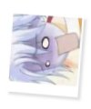

|
I N F O R M A T I O N » P E R S O N A L I T Y
Being approximately 12 years old, Mannen is one energetic kid. Seemingly harmless, Mannen has quite a firey and egotistical personality. Part of his personality comes from how he tries to think like an adult, and partly because he's trying to prove himself to his elders.
Mannen shows his intelligence more than once throughout the show. Right from the start, he thought of tracking the next Pretear down by letting Shin round up the girls with his cute personality, and the next Pretear should react to him. Of course, later he brags about his intelligence, saying how he knew it all along that Himeno was the next Pretear. ^-^ Mannen likes to lead Hajime and Shin, the other young Liefe Knights. Although Mannen tends to call Shin names and boss Hajime and Shin around, he simply feels the need to prove himself worthy of being a knight. Since he doesn't get much attention as a young knight, he tries his hardest to prove himself to the younger knights. Hajime and Shin both have much respect Mannen, partly because arguing with him would prove to be a rather difficult task. ^-^ Mannen does, however, respect most of his elders and Himeno as well. Unlike Hayate, Mannen had full confidence in Himeno from the start. Part of this may be that he's still a kid and doesn't fully understand the situation with the previous Pretear, but dispite that, Mannen is still willing to try it with Himeno, regardless of the previous situations.
Mannen is also seen as a comic relief in the show. He may be a sly, devious brat but he's still no match for Himeno's odd tastes.^_^ One of the more amusing scenes is in episode 3. Having snatched an unsuspecting Himeno's ice cream away, Mannen greedily gobbles it up, only to find that Himeno's tastes did not exactly match his own. Upon the first tastes, he falls over blue faced and dismayed at the unpleasant taste of Sauerkraut (green-tea, spicy Korean pickles and fermented soybeans O.o) ice cream.
Overall, Mannen is quite a character. He's spontaneous and energetic, bratty and egotistical, but all in all, he's just being a kid. In reality, he's actually more mature than most kids his age. He's got a duty to fulfill, and that makes him learn responsibility and such at an early time.
ainoyumeNET 2002 Trinity. All rights reserved. 
|
INFORMATION
/basics
/personality
/thoughts
/partners
/power
/voice
/quotations
|
MEDIA
/anime
/manga
/wallpapers
|
SITE RELATED
/updates
/links out
/link Ice Brat!
/credits
/contact me
|